CREACION DE CLIENTES¶
Nos dirigiremos a Maestros > Clientes o bien buscaremos con la palabra clientes en el buscador general de Winfra:
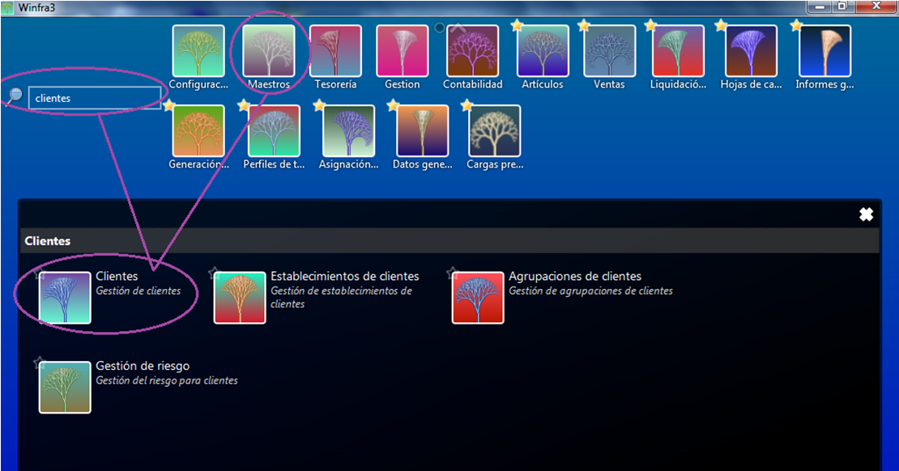
Una vez aquí se nos abre una pantalla donde podremos consultar clientes a través del buscador de clientes o podremos seleccionar el dar un alta nueva, lo más sencillo para dar un alta nueva es hacerlo a través del asistente ya que este nos va a indicar de manera sencilla los campos que son imprescindibles de rellenar:
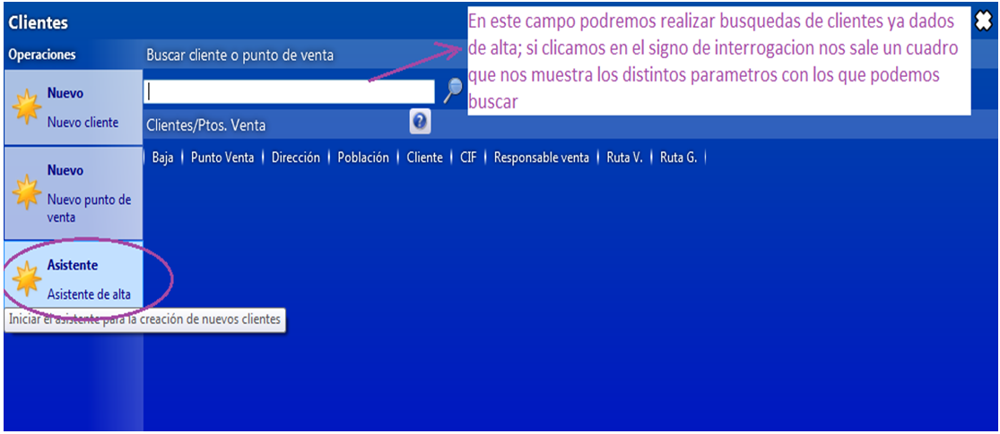
Una vez seleccionemos el Asistente se nos abre una pantalla donde introduciremos los datos de ese cliente, todos los campos que tengan el borde en rojo son obligatorios de rellenar:
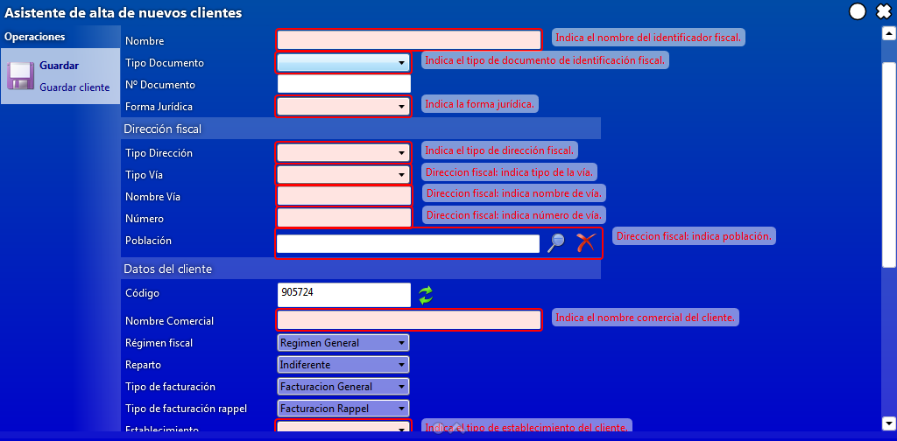
Los campos en los que nos aparece una flecha a la derecha del mismo contienen un desplegable con las distintas opciones que tenemos; el primero de ellos es para indicar la identificación fiscal y estas son las opciones que tenemos:
En forma jurídica, indicaremos si es S.A; S.L……. etc.:
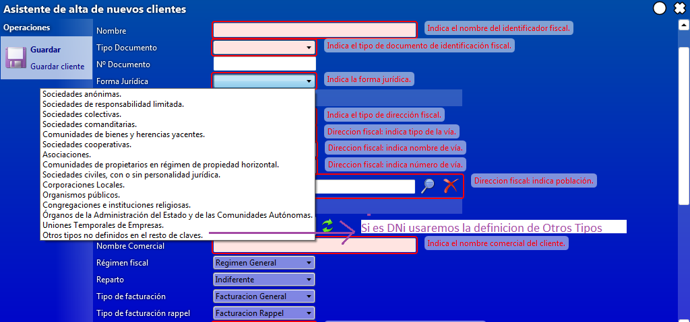
En el apartado de Dirección Fiscal, en el tipo de dirección le indicaremos si es la fiscal o si es la misma que la del reparto (punto de venta):
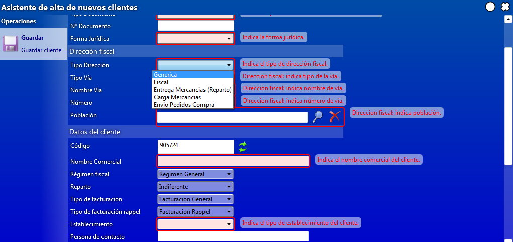
En el tipo de vía nos saldrán las siguientes opciones:
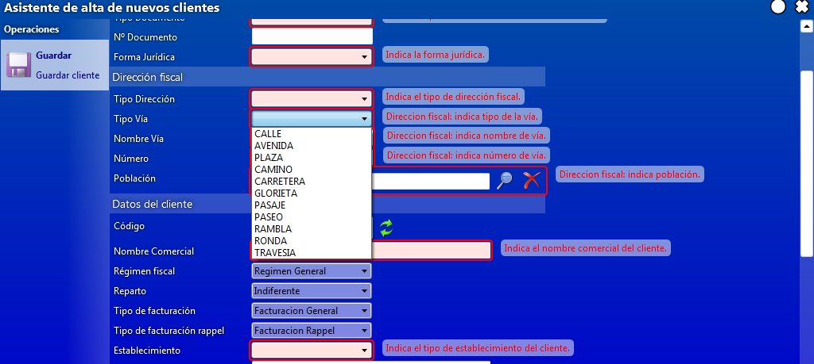
En régimen fiscal de normal será el general que nos da por defecto pero si no fuera así desplegaremos con la flecha y seleccionaremos el que nos interese:
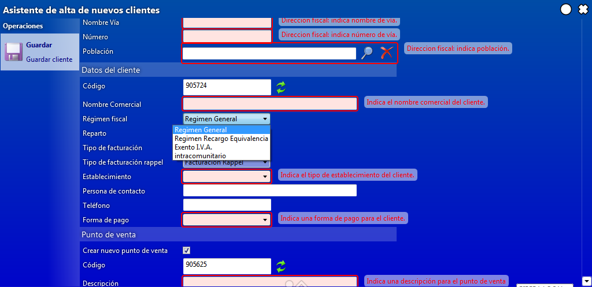
En establecimiento al desplegar nos saldrán los distintos tipos de establecimientos que hay:
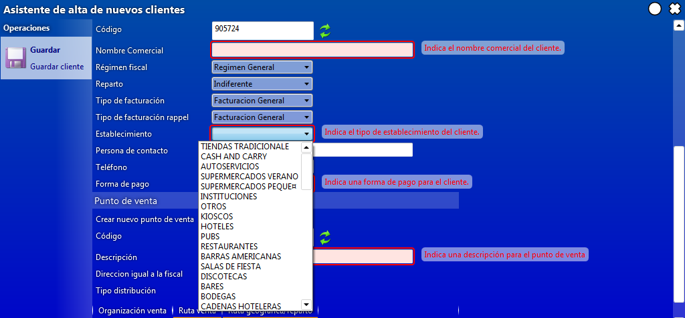
En el apartado de Punto de venta, si este ya existe desclicaremos la opción de Nuevo Punto Venta (se puede dar el caso que un local cambie solo de propietario con lo que el punto de venta ya existe):
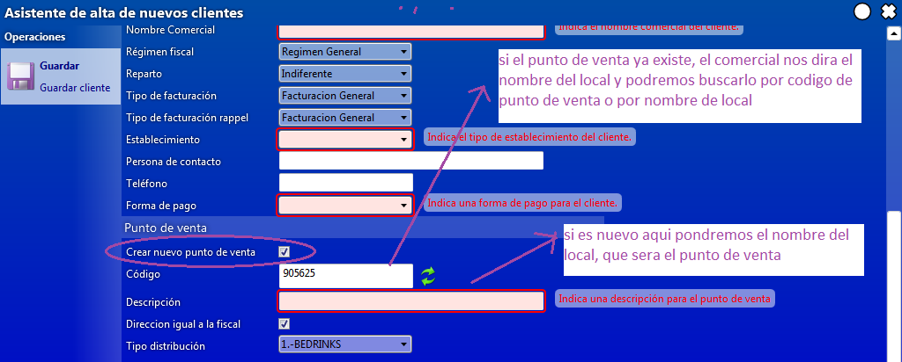
Si la dirección es la misma que la fiscal clicaremos la opción de Dirección igual:
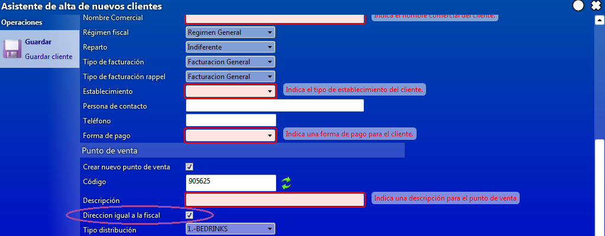
Hay que asignar siempre la ruta de venta y de reparto al cliente, para ello al final del formulario, nos aparece la ventana de asignación de rutas,pondremos un asterisco y pulsaremos Intro para que nos muestre las disponibles y seleccionaremos la correcta:
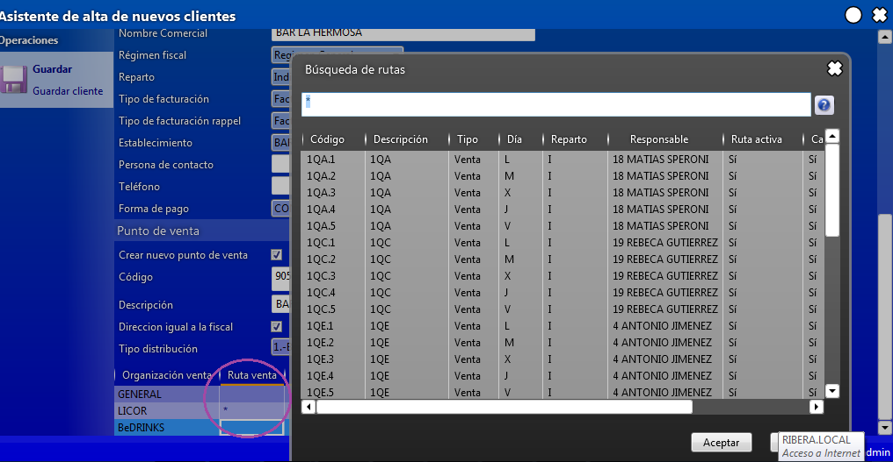
Una vez finalizado le daremos a guardar:
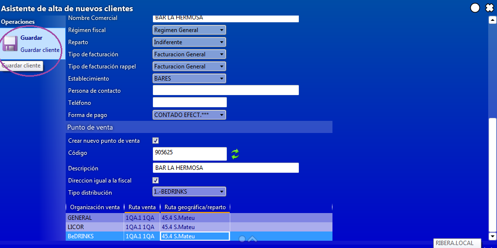
Una vez creado en el margen derecho nos sale un cuadro que nos muestra la identificación fiscal del cliente, el código de cliente y el código de punto de venta:
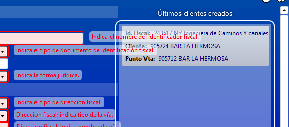
Clicando sobre cualquiera de ellos accederemos a la información contenida; nos deberemos de dirigir a la del cliente para poder asignarle las condiciones de venta, cuando cliquemos sobre el dato nos llevara a la pantalla de información del cliente donde iremos a la pestaña de Condiciones y luego clicaremos sobre Nueva Condición:
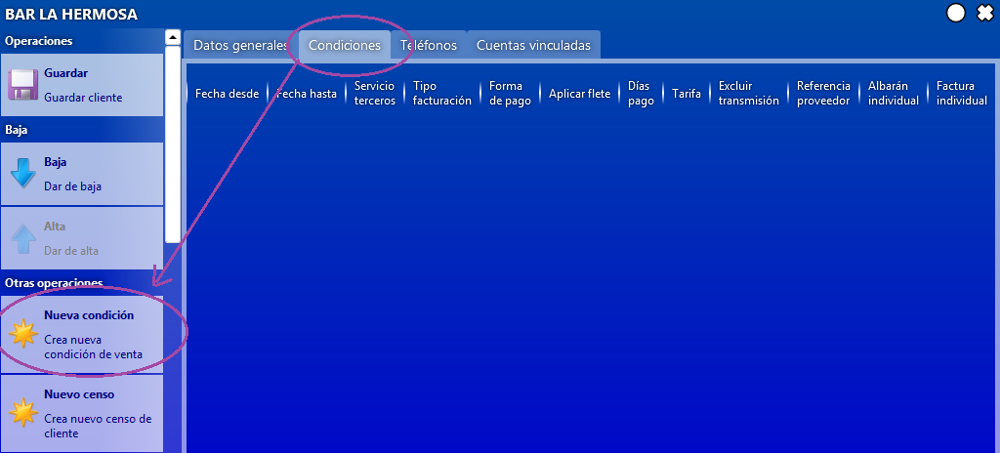